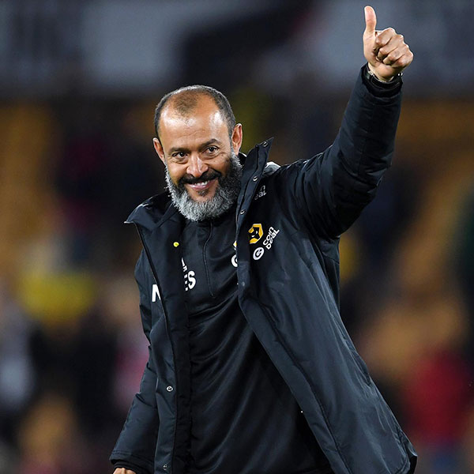

Wolverhampton Wanderers were organized in 1877 and was one of the founders of the professional soccer league in the UK, along with 14 other teams. The team currently plays in the Premier League, the highest tier of English Football. There has been great times, with them winning the top tier on three occasions and have won the FA (Football Association) Cup on four occasions.
I have always loved researching the history of Wolverhampton Wanderers and have dedicated much of my time watching their games and any media they share on their social media channels. It is always a major talking point in family discussions. I miss being able to attend the home games, since I have moved to the USA.
Here is a YouTube Video of my Dad, brother, and me attending the celebrations of Wolves winning the Championship League (second tier) Title in 2018.
List of my all-time favorites
- All-time favorite players
- Ruben Neves
- Raul Jimenez
- Steve Bull
- Helder Costa
- Matheus Cunha


- All-time favorite managers
- Nuno Espirito Santo
- Julen Lopetegui
- Mick McCarthy
- Gary O'Neil
- Stan Cullis



- All-time favorite jerseys
- 1996 Away Shirt
- 2017 Home Shirt
- 2010 Goalkeeper Shirt
- 2003 Home Shirt
- 2019 Home Shirt


Stats from a game
Wolverhampton Wanderers and Manchester United have a long history of playing one another. Here are the stats from one of their games in 2020. Wolves were very unlucky to lose 1-0. You can see on this graphic, where shots were taken and who took the shot. The larger the circle, the higher the probability of scoring from that shot.